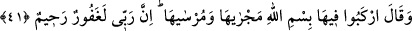
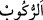

temizlenme sayesinde rabbânî şeriat ahlâkıyla bezenmeye hak kazanırlar. et-Te’vîlâtü’n-
Necmiyye’de böyle geçmektedir.
41. (Nuh) “Gemiye binin.” dedi. “Onun yüzüp gitmesi de durması da Allah’ın
adıyladır. Şüphesiz ki Rabb’im çok bağışlayan, pek esirgeyendir.”
Nuh (a.s.) gemiye yüklenmesi emredilen çiftleri yükledikten sonra beraberindeki
mü’minlere: “Gemiye binin.” dedi.”
Kâşifî der ki: “Nuh (a.s.) onları gemisinin yanına götürdü. Hazırladığı bir örtüyü
geminin üzerine örttü. Zeminden azab suyu kaynadı. Gökten de belâ ve musibet suyu
aşağı gelmeye başladı.”
el-İrşâd’da şöyle denilir: “  (binmek)”, hareket edebilen bir şeye yükselmek
demektir. Burada “fî” ile kullanılması zannedildiği gibi Nuh ve kavmine geminin
güvertesinde değil de içinde bulunmaları emredildiği içindir. Çünkü daha sağlam
rivayetlere göre Nuh (a.s.) vahşi ve yırtıcı hayvanlarla kuşları geminin üç katından en
alttakine, evcil hayvanları ortadakine yerleştirmiş, yanındakilerle beraber kendisi de
ihtiyaç duyacakları erzakı da alarak en üst kata yerleşmiştir.
Denildiğine göre gemiye 10 Receb Cuma günü bindiler. Gemi, Beytullah’a gelince bir
hafta tavaf etti. Gemi mü’minleri yüz elli gün dolaştırdı. Cudi dağının üzerinde bir ay
karar kıldı. Muharrem’in onuncu âşûrâ günü gemiden çıktılar.
“Onun” yüzüp gittiği vakit “yüzüp gitmesi de” durup hapsedildiği ve sabitleştirildiği
zaman “durması da Allah’ın adıyladır.” Yani, Allah’ın adını anarak ya da “Bismillah”
diyerek binin.
Müftî Sâ‘dî der ki: “Bu ibarenin aslı şöyledir: ‘Allah’ın adıyla birlikte’ ya da
‘Allah’ın adıyla teberrük ederek binin.’ İşte ‘Allah’ın adını anarak’ ya da ‘Bismillah
diyerek’ ifadelerinin te’vili budur.
el-Kevâşî’de şöyle denilir: Yâni “Onun yüzdürülüp götürülmesi de durdurulması da
Allah’ın adıyladır.” Nuh (a.s.) geminin hareket etmesini istediği zaman “Bismillah”
demiş gemi; de hareket etmiştir. Geminin durmasını istediği zaman da “Bismillah”
demiş, gemi de durmuştur.
“Şüphesiz ki Rabb’im” günah ve hataları “çok bağışlayan,” kullarını “pek
esirgeyendir.” Bu yüzden sizi bu beladan kurtarmıştır. Bu sıfatları olmasaydı, sizi
kurtarmazdı.
Burada Nuh (a.s.)’ın ve mü’minlerin kurtulmayı hak ettiklerinden değil, sırf Allah
Teâlâ’nın fazlı, bağışlaması ve rahmeti sebebiyle kurtulduklarına bir delâlet vardır.
Nitekim ehl-i sünnet’in görüşü de böyledir.